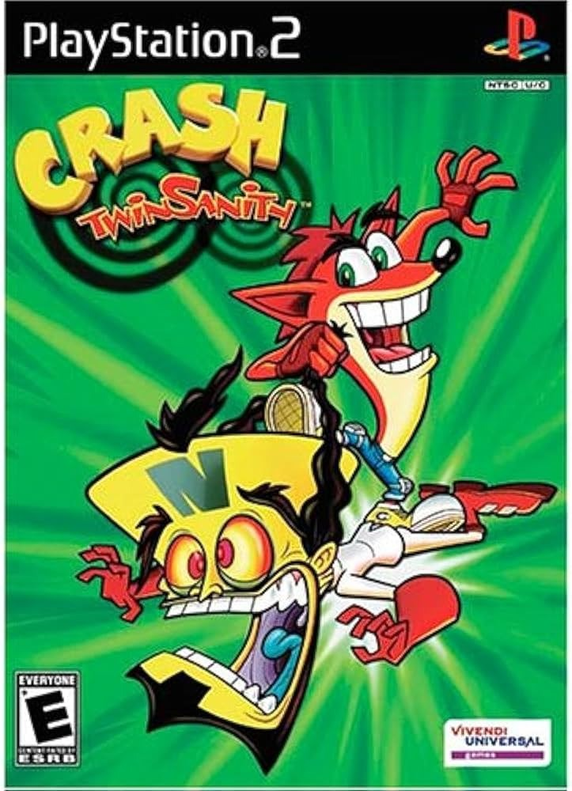

Sinopse
Crash Twinsanity é um jogo de plataforma em 3D que coloca o icônico Crash Bandicoot em uma aventura caótica ao lado de seu maior inimigo, o Dr. Neo Cortex. Forçados a cooperar contra um novo inimigo comum, os dois devem explorar ilhas tropicais, laboratórios subterrâneos e até o próprio subconsciente.
O jogo é conhecido por seu humor exagerado, design criativo de níveis conectados sem telas de carregamento e a mecânica de dupla jogabilidade, onde Crash e Cortex interagem de maneiras inusitadas. Tudo isso embalado por uma trilha sonora marcante com instrumentos vocais inusitados.
Características Principais
- Jogabilidade em mundo semiaberto com transições suaves entre fases
- Crash e Cortex trabalham juntos em diversas situações hilárias
- Desafios de plataforma, combate e puzzles com variações criativas
- Trilha sonora composta inteiramente com vocais humanos
- Exploração de ambientes variados como ilhas, cavernas e bases científicas
- Humor autêntico e estilo cartunesco marcante da franquia Crash
Imagens Adicionais